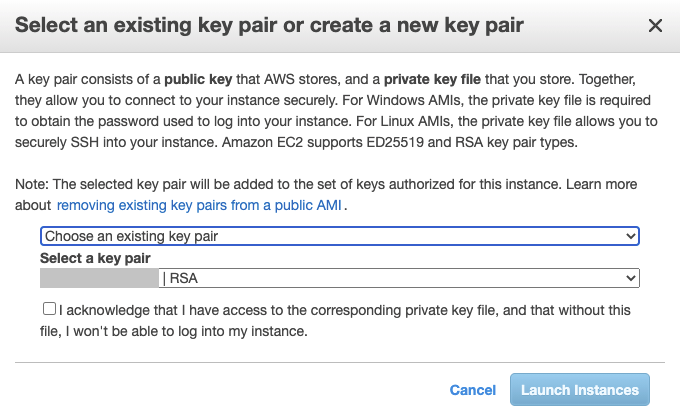
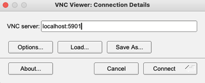

This section describes how to run the AMI with Arm Virtual Hardware on a local host computer and assumes that have setup the AWS Marketplace.
- Note
- Refer to Infrastructure for others ways to use the Arm Virtual Hardware.
There are two was to launch the AMI:
Once the AMI is launched you may Connect to the EC2 Instance.
- Note
- Terminate the AMI instance once it is no longer required.
Launch from Website
Before you can launch from a Website you should create a VPC and a key pair.
Choose the following settings:
- EC2 Instance Type: t3.medium is sufficient to run Arm Virtual Hardware. An instance with more resources may improve performance.
- VPC Settings: select the VPC settings for the EC2 instance.
- Key Pair Settings: select your key.
Launch trough EC2
The following steps launch the Arm Virtual Hardware AMI from the AWS Console:
- Choose AMI: Select the Arm Virtual Hardware and click Launch (skip this step when you launch from marketplace).
- Choose an Instance Type: Select t3.medium (2 vCPUs, 4 GiB memory) is recommended. An instance with more resources may improve performance.
- Configure Instance Details: Under Network select a VPC. Note: a public IP address is required for SSH access.
- Add Storage: The default storage 24 GiB is sufficient for most applications. Optionally, this can be increased if needed.
- Add Tags: This is optional, however adding the Key=Name with a meaningful Value helps you to identify the EC2 instance.
- Configure Security Group: Set Type: SSH, Protocol: TCP, Port Range: 22, Source: My IP (or Anywhere) to allow access from your IP address.
- Review Instance Launch: allows you to verify the setup. Then click Launch
You may then select an existing key pair or create a new key pair. When an existing key pair is selected, confirm in the dialog the check box I acknowledge.... To finally start, click Launch Instances.

Connect to the EC2 Instance
There are multiple ways to connect to the Amazon EC2 Linux instance that runs Arm VHT. For more information refer to:
Using SSH
The connect via the Secure Shell (SSH) client of your computer, use the following command:
$ ssh -i <path>/your_key.pem ubuntu@<Public IPv4 DNS>
Where:
- ssh is the SSH command
- option -i specifies the location of the AWS private key file that has the file extension *.pem.
- ubuntu is the user name of the Amazon EC2 Ubuntu Linux instance.
- <Public IPv4 DNS> is the public address typically in the format: ec2-*nn*-*nn*-*nn*-*nn*.compute-1.amazonaws.com
You can review this details also under the AWS EC2 Management Console under EC2 - Instances - <select instance> - Connect and then select the tab SSH Client.
Using VNC
Some applications may require a display. Virtual Network Computing (VNC) is available in the Arm VHT AMI and can be used as a remote desktop.
First, setup VNC password.
When prompted, enter a password. A read-only password is not required.
To start VNC every time the machine is rebooted enable it to start on boot:
$ sudo systemctl enable vncserver@1.service
To start VNC now (1 time, without rebooting) use:
$ sudo systemctl start vncserver@1.service
To disable VNC from running on future machine restarts run:
$ sudo systemctl disable vncserver@1.service
To stop VNC now use:
$ sudo systemctl stop vncserver@1.service
If VNC is running on the EC2 instance a VNC client can be used to connect. The easiest way to connect is by forwarding the VNC port using ssh. With this technique no additional ports need to be opened in the EC2 security group.
To connect use SSH port forwarding to avoid opening any other ports in the AWS security group
$ ssh -i /path/to/aws.pem -L 5901:localhost:5901 ubuntu@@<EC2-IP-addr>
Open a VNC viewer, such as TigerVNC. Enter the VNC server as localhost:5901 and click Connect. It should ask for the previously set password and then present a remote desktop.

Using Code Server
Code Server is automatically running on the AMI on port 8080. To connect use port forwarding to ssh into the EC2 instance.
$ ssh -i /path/to/aws.pem -L 8080:localhost:8080 ubuntu@@<EC2-IP-addr>
Using a local browser connect to http://localhost:8080 and you should see Visual Studio Code appear in the browser.
List AMI Inventory
To obtain the list of tools installed in the AMI instance use:
Following output shall be expected by default:
ubuntu@ip-10-252-70-253:~$ ./tool-inventory.sh
Product: ARM Compiler 6.16 Professional
Component: ARM Compiler 6.16
Tool: armclang [5dfeab00]
Target: arm-arm-none-eabi
GNU Compiler information:
arm-none-eabi-gcc (GNU Arm Embedded Toolchain 10-2020-q4-major) 10.2.1 20201103 (release)
Copyright (C) 2020 Free Software Foundation, Inc.
This is free software; see the source for copying conditions. There is NO
warranty; not even for MERCHANTABILITY or FITNESS FOR A PARTICULAR PURPOSE.
Corstone-300 FVP information:
Fast Models [11.16.26 (Dec 9 2021)]
Copyright 2000-2021 ARM Limited.
All Rights Reserved.
Info: /OSCI/SystemC: Simulation stopped by user.
Vela Compiler information:
3.2.0
CMSIS build information:
(cbuild.sh): Build Invocation 0.10.4 (C) 2021 ARM
error: missing required argument <project>.cprj
Usage:
cbuild.sh <ProjectFile>.cprj
[--toolchain=<Toolchain> --outdir=<OutDir> --intdir=<IntDir> <CMakeTarget>]
<ProjectFile>.cprj : CMSIS Project Description input file
--toolchain=<Toolchain> : select the toolchain
--intdir=<IntDir> : set intermediate directory
--outdir=<OutDir> : set output directory
--quiet : suppress output messages except build invocations
--clean : remove intermediate and output directories
--update=<CprjFile> : generate <CprjFile> for reproducing current build
--help : launch documentation and exit
--log=<LogFile> : save output messages in a log file
--jobs=<N> : number of job slots for parallel execution
--cmake[=<BuildSystem>] : select build system, default <BuildSystem>=Ninja
<CMakeTarget> : optional CMake target name
Arm Fast Models information:
Fast Models
System Canvas 11.16.24 (Nov 4 2021)
Copyright 2000-2021 ARM Limited.
All Rights Reserved.
$PVLIB_HOME = /opt/FM/FastModelsPortfolio_11.16 (Version = 11.16.24)
Arm Virtual Hardware Targets:
/opt/VHT/VHT_Corstone_SSE-300_Ethos-U55
/opt/VHT/VHT_Corstone_SSE-300_Ethos-U65
/opt/VHT/VHT_MPS2_Cortex-M0
/opt/VHT/VHT_MPS2_Cortex-M0plus
/opt/VHT/VHT_MPS2_Cortex-M23
/opt/VHT/VHT_MPS2_Cortex-M3
/opt/VHT/VHT_MPS2_Cortex-M33
/opt/VHT/VHT_MPS2_Cortex-M4
/opt/VHT/VHT_MPS2_Cortex-M7
/opt/VHT/VHT_MPS3_Corstone_SSE-300
For the list of locally installed CMSIS Packs use:
For example, default output on a new AMI instance would be:
ubuntu@ip-10-252-70-253:~$ cp_list.sh
Software packs are installed at: /home/ubuntu/packs
Currently installed software packs:
ARM.V2M_MPS2_SSE_300_BSP.1.0.0.pack
ARM.CMSIS.5.7.0.pack
Running Micro Speech
Run the micro speech example. Connect to the EC2 instance using ssh as described above and then get the example, compile, and run.
$ git clone https://github.com/arm-software/VHT-TFLmicrospeech.git
For shared private projects your GitHub Username and Password key will be required to clone.
Navigate to the example directory:
$ cd ./VHT-TFLmicrospeech/Platform_FVP_Corstone_SSE-300_Ethos-U55
Install the necessary CMSIS Packs (you may need to change permissions for the script):
$ chmod 777 packlist.sh
$ ./packlist.sh
Note that if this generated errors, you most likely have a legacy set up. Use this command to install packs instead:
Build the example:
$ cbuild.sh microspeech.Example.cprj
When built, you can now run the example on the Virtual Hardware Target:
The output should display similar to:
Fast Models [11.15.14 (Jun 23 2021)]
Copyright 2000-2021 ARM Limited.
All Rights Reserved.
telnetterminal0: Listening for serial connection on port 5000
telnetterminal1: Listening for serial connection on port 5001
telnetterminal2: Listening for serial connection on port 5002
telnetterminal5: Listening for serial connection on port 5003
Ethos-U rev f19bc8d4 --- Apr 23 2021 13:24:11
(C) COPYRIGHT 2019-2021 Arm Limited
ALL RIGHTS RESERVED
Heard yes (147) @1000ms
Heard no (141) @5600ms
Heard yes (149) @9100ms
Heard no (142) @13600ms
Heard yes (149) @17100ms
Info: Simulation is stopping. Reason: Cycle limit has been exceeded.
Info: /OSCI/SystemC: Simulation stopped by user.
[warning ][main@0][01 ns] Simulation stopped by user
--- cpu_core statistics: ----------------------------------------------------
Simulated time : 20.000002s
User time : 396.865593s
System time : 1.924400s
Wall time : 398.550649s
Performance index : 0.05
cpu_core.cpu0 : 10.03 MIPS ( 4000000000 Inst)
----------------------------------------------------------------------------